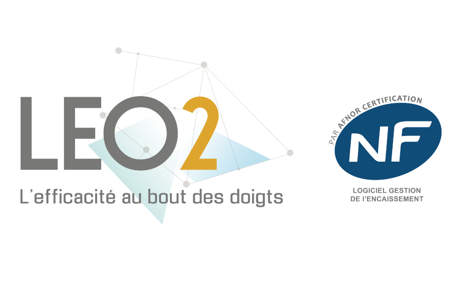
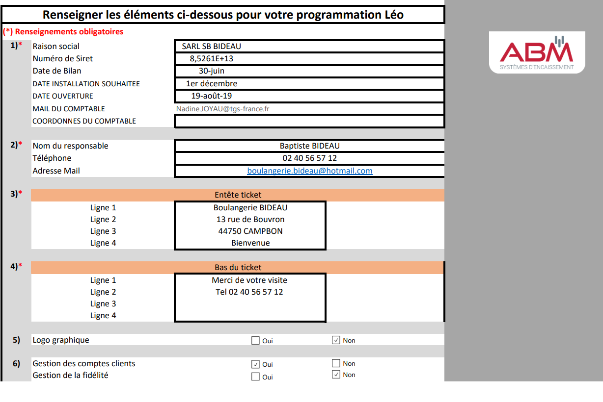
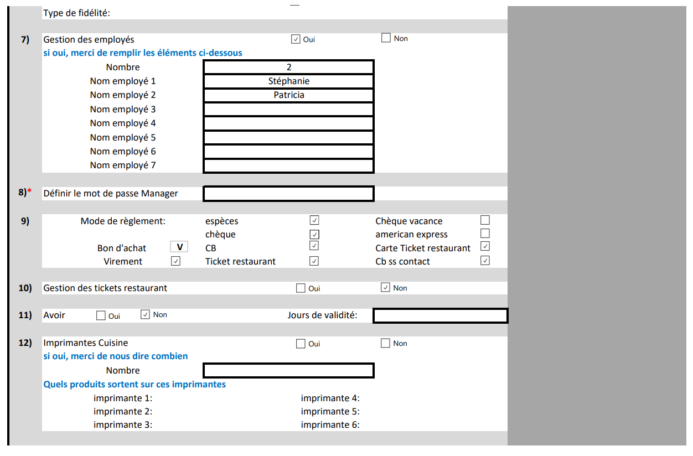
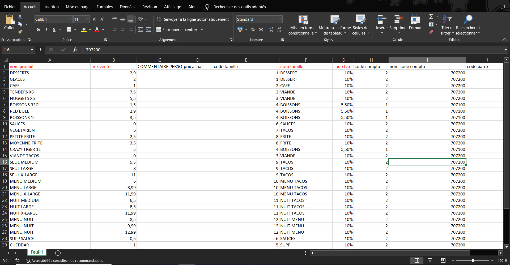
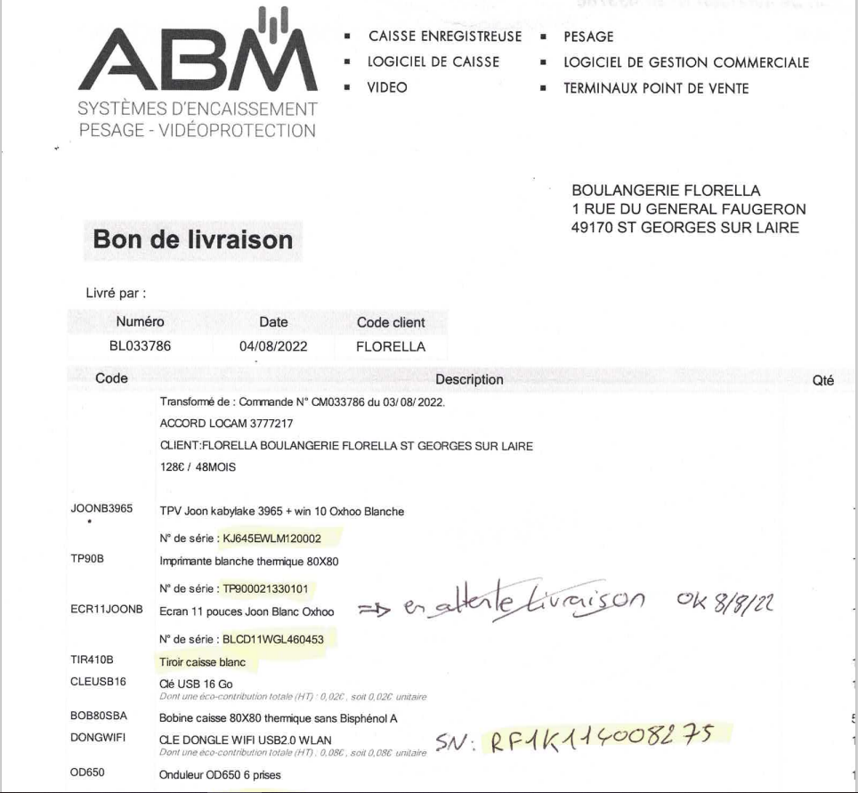
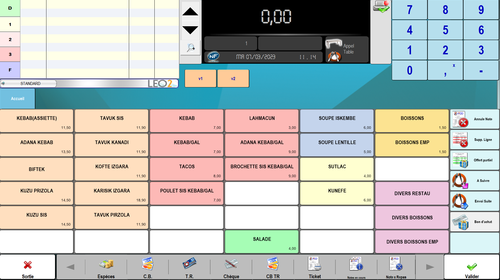
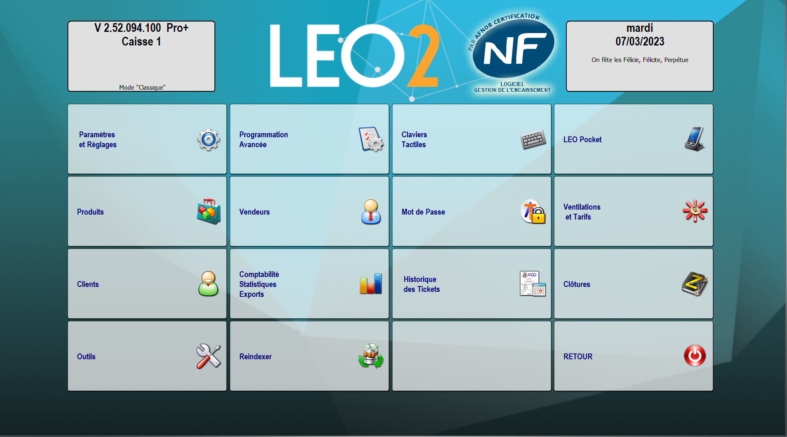

ABM est une entreprise spécialisé dans les caisses enregistreuses dans le Grand Ouest...
Depuis plus de 40 ans, la société ABM est spécialisé dans le système d’encaissement.
Leur implantation locale permet d’apporter un service de proximité et de qualité.
Avec une équipe de plus de 40 personnes, ABM accompagne les projets de chaque clients
Ils utilisent comme composants informatique Caisses enregistreuses, caisses tactiles, caméras, balances.
Les caisses enregistreuses et logiciels d’encaissement sont certifiés par les organismes AFNOR et LNE pour les nouvelles normes 2018.
Aide en ligne a la résolution du problème
Dépannage en présentielle si impossibilité
Paramètrage du Windows : Nom, Logiciels, Pare-feu, Mise a jour, Télémaintenance (Teamviewer)
Préparation du Matériel Caisse enregistreuse, Imprimante ticket, Tiroir caisse, Antenne Wifi,
LEO2
Le logiciel d'encaissement LEO2 a été créé en 2006. Facile, intuitif LEO2 est certifié NF 525. Il est devenu rapidement un best-seller. Aujourd'hui, des milliers de commerces l'utilisent : restaurants, cafétéria, boulangerie, pâtisserie, fleuristes, coiffeur, salon de beauté, supérette…"

INNOSHOP
Le logiciel de caisse Innoshop Store se démarque des autres logiciels de commerce de détail avec une utilisation intuitive et une interface moderne qui vous permettront de gérer efficacement votre commerce. Soyez aux normes pour 2018 avec le 1er logiciel de commerce de détail NF 525 de France !
CRISALID
Caisse enregistreuse et logiciel de caisse certifié NF525 Depuis 1992, le groupe Crisalid® accompagne les commerçants dans l'informatisation de leur point de vente avec une gamme de logiciels d'encaissement adaptés
aux besoins spécifiques des différents métiers.
Materiel utilisé selon le cahier des charges du commercial :
Caisse Enregistreuse
Imprimante ticket
Tiroir caisse
Afficheur client
Caméra
Antenne wifi
PAD
Preparation de la Caisse enregistreuse :
Cahier des charges
 Intégration Excel Leo/ Devis client
 Clavier Leo / Paramètre Leo
 